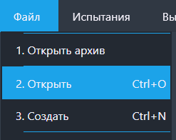
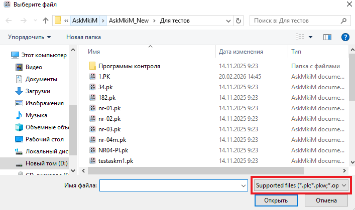

Функция "Открыть"
Данной функцией можно отркыть файлы программ контроля.
Путь и вызов
Нахождение в программе
Верхнее меню → "Файл" → "Открыть"
Горячие клавишы
Ctrl + OНа изображении показано нахождение данной функции в программе:

Действия после нажатия
После нажатия горячих клавиш или ЛКМ по кнопке "Открыть" открывается файловый менеджер ОС, предлагающий нам выбрыть файл для отркытия (рисунок 2).

Для более удобной фильтрации мы можем выбрать
тип файлов для отображения (справа снизу на рисунке 2 в красном квадрате).
На выбор предлагаются:
- Supported files - все типы файлов, с которыми работает программа;
- PK/PKW files - файлы программ контроля старого (*.pk) и нового (*.pkw) формата;
- OPK/OPKW files - файлы архивов программ контроля старого (*.opk) и нового (*.opkw) формата;
- Protocol files - файлы протоколов выполнения программ контроля старого (*.lst) и нового (*.lstw) формата;
- ACS files - файл тестовых шаблонов;
- Text files - текстовый файл.
После выбора нужного файла нужно нажать по нему два раза ЛКМ или нажать "Открыть" (справа снизу).